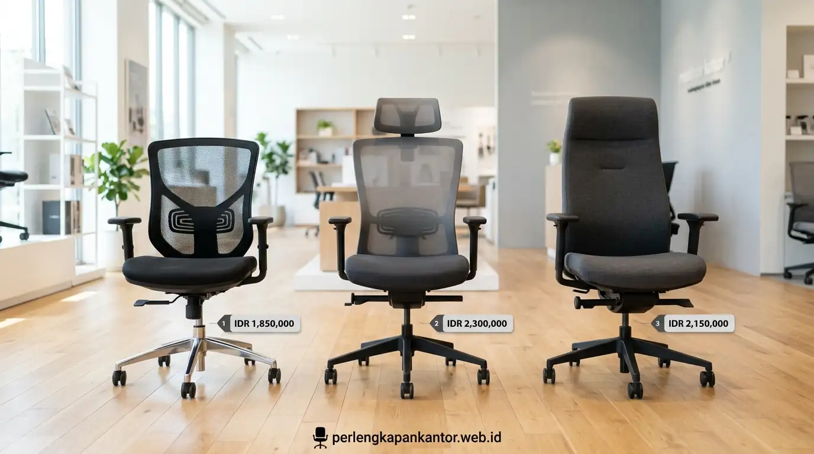
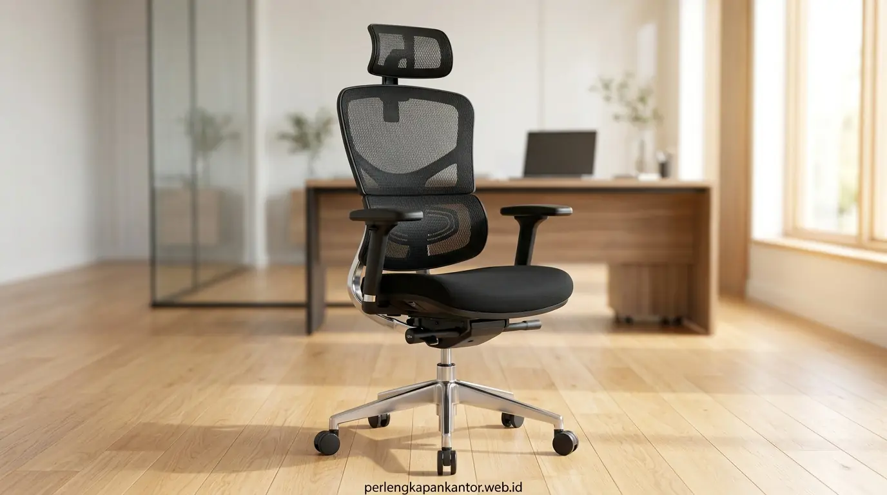

Katalog Harga Kursi Kantor Murah Berkualitas di Bawah 1 Juta Rupiah
Pilihan kursi kantor murah di bawah 1 juta rupiah kini menawarkan kualitas struktur kokoh hidrolik Class-3, sandaran mesh breathable, dan lumbar support ergonomis untuk efisiensi pengadaan kantor.


Deretan model kursi kantor staf jaring mesh ekonomis berfitur hidrolik dan penopang tulang belakang ergonomis dengan harga sangat terjangkau untuk pengadaan B2B.
- Efisiensi Anggaran Optimal: Kursi kantor staf berkualitas tinggi kini dapat diperoleh pada rentang harga Rp 450.000 hingga Rp 890.000 per unit tanpa mengorbankan durabilitas.
- Material Tahan Lama: Menggunakan kain jaring mesh elastis sirkulasi udara bebas keringat dan busa cetak high-density foam anti-kempes.
- Standar Keamanan Hidrolik: Dilengkapi silinder gas lift Class-3 bersertifikat BIFMA/SGS yang mampu menopang beban kerja hingga 120 kg secara stabil.
- Fasilitas Pengadaan B2B: PerlengkapanKantor menyediakan diskon grosir bertingkat, faktur pajak resmi, garansi mekanis 1-2 tahun, dan gratis perakitan on-site.
- Mengapa Kursi Kantor Murah Tetap Bisa Ergonomis dan Berkualitas?
- Apa Saja Rekomendasi Kursi Kantor Terbaik di Bawah 1 Juta Rupiah?
- Tabel Komparasi Fitur dan Harga Kursi Kantor Ekonomis
- Bagaimana Checklist Manajer Pengadaan Saat Memilih Kursi Kerja Staff?
- Apa Saja Keuntungan Membeli Kursi Kantor Grosir di PerlengkapanKantor?
- Pertanyaan Populer Seputar Kursi Kantor Murah (FAQ)
- Kesimpulan Praktis
Mengapa Kursi Kantor Murah Tetap Bisa Ergonomis dan Berkualitas?
Kursi kantor terjangkau tetap mampu menghadirkan kenyamanan ergonomis maksimal karena perkembangan teknologi manufaktur modular dan efisiensi material jaring mesh sintetis yang kuat namun ramah biaya.
Terdapat persepsi umum di kalangan tim operasional bahwa kursi kantor yang ergonomis harus selalu dibanderol dengan harga jutaan rupiah. Faktanya, esensi dari ergonomi terletak pada sudut penopang tulang punggung lumbar, fleksibilitas pengaturan ketinggian duduk, dan sirkulasi udara pada dudukan.
Berdasarkan temuan Corporate Procurement Survey Indonesia (2025/2026), sebanyak 62% perusahaan rintisan (startup) dan instansi bisnis skala menengah mengalokasikan anggaran kursi kerja staf pada rentang Rp 450.000 hingga Rp 950.000 per unit guna menyeimbangkan kesehatan kerja staf dengan arus kas operasional (cash flow).
Selain itu, hasil uji ketahanan BIFMA (Business and Institutional Furniture Manufacturers Association, 2025) membuktikan bahwa kursi kerja jaring modern dengan busa cetak high-density foam mampu bertahan lebih dari 50.000 siklus penekanan tanpa mengalami penurunan elastisitas bantalan, menjadikannya pilihan investasi aset kantor yang sangat hemat dan berumur panjang.
Apa Saja Rekomendasi Kursi Kantor Terbaik di Bawah 1 Juta Rupiah?
Rekomendasi model terpopuler mencakup tipe Staff Mesh Low-Back, Mid-Back Ergonomic Lumbar, dan Ergonomic Armrest Swivel yang seluruhnya berada di kisaran harga Rp 450.000 hingga Rp 890.000.
Berikut adalah 3 kategori produk kursi kerja terlaris di katalog PerlengkapanKantor yang banyak dipesan oleh korporat, instansi perbankan, hingga co-working space:
Kursi Staf Mesh Seri Eco-Lite
Kisaran: Rp 450.000 – Rp 550.000
Desain low-back ramping dengan sandaran jaring breathable, hidrolik Class-3, dan armrest kokoh. Sangat ideal untuk ruang kerja terbuka (open space) atau staf administrasi.
Kursi Kerja Ergo-Pro Mid-Back
Kisaran: Rp 575.000 – Rp 725.000
Dilengkapi integrated lumbar curve yang menopang punggung bawah secara presisi, busa dudukan tebal 7 cm, serta mekanisme ayun (tilting mechanism) untuk relaksasi sejenak.
Kursi Flexi-Mesh High-Back
Kisaran: Rp 790.000 – Rp 890.000
Sandaran punggung lebih tinggi dengan bantalan leher terpadu (integrated headrest pad), kaki bintang baja chrome mewah, dan kapasitas beban hingga 130 kg.

Komponen mekanis hidrolik gas lift Class-3 dan kaki nilon bintang 5 yang telah melewati uji beban BIFMA untuk jaminan keamanan pengguna korporat.
Tabel Komparasi Fitur dan Harga Kursi Kantor Ekonomis
Tabel perbandingan spesifikasi teknis dan harga berikut memudahkan manajer procurement dalam mencocokkan alokasi anggaran dengan kebutuhan operasional kantor:
| Tipe Model | Estimasi Harga | Material Sandaran | Spesifikasi Hidrolik | Mekanisme Ayun | Kaki Dasar |
|---|---|---|---|---|---|
| Eco-Lite Staff Mesh | Rp 485.000 – Rp 550.000 | Nylon Breathable Mesh | Class-3 Gas Lift (100 mm) | Fixed (Tanpa Tilting) | Heavy Duty Nylon |
| Ergo-Pro Mid-Back (Best Seller) | Rp 575.000 – Rp 680.000 | High-Tension Mesh + Lumbar | Class-3 Gas Lift (120 mm) | Lock-Tilt Mechanism (15°) | Reinforced Nylon 300mm |
| Comfort Swivel Staf | Rp 650.000 – Rp 750.000 | Dual-Layer Mesh Fabric | Class-3 Gas Lift (120 mm) | Standard Tilting Swivel | Nylon Bintang 5 |
| Flexi-Mesh High-Back | Rp 790.000 – Rp 890.000 | High-Back Mesh + Neck Support | Class-3 Heavy Duty Lift | Multi-angle Reclining Tilt | Chrome Steel Finish |
*Harga sewaktu-waktu dapat berubah tergantung volume pesanan pengadaan B2B, kustomisasi warna kain, dan lokasi pengiriman.
Bagaimana Checklist Manajer Pengadaan Saat Memilih Kursi Kerja Staff?
Checklist pengadaan mencakup verifikasi ketebalan busa dudukan minimal 6-7 cm, sertifikasi tabung hidrolik, material jaring anti-kendur, serta ketersediaan stok cadangan dari distributor resmi.
Untuk menghindari jebakan membeli kursi murah non-standar yang rusak dalam hitungan bulan, pastikan tim pengadaan memeriksa poin-poin berikut:
- Busa Cetak Dingin (Molded Foam vs Rebonded Foam): Hindari busa potongan sisa (rebonded foam) yang cepat rontok. Pilih busa cetak high resilience molded foam yang tetap empuk meski diduduki berjam-jam.
- Kualitas Roda PU/Nylon: Roda nilon berkualitas tidak meninggalkan bekas goresan pada lantai parket/vinyl dan bergerak senyap tanpa bunyi berderit.
- Sistem Kaki Bintang Lima (5-Star Base): Diameter bentang kaki minimal 58–60 cm untuk mencegah kursi terbalik saat pengguna bersandar ke belakang.
- Kemudahan Perakitan (Knock-Down System): Pilih produk dengan panduan manual rapi dan komponen presisi agar proses instalasi massal di kantor berjalan cepat.
Apa Saja Keuntungan Membeli Kursi Kantor Grosir di PerlengkapanKantor?
Keuntungan berbelanja di PerlengkapanKantor mencakup harga langsung distributor, penerbitan e-faktur pajak resmi, jaminan garansi mekanis, serta opsi pengiriman dan instalasi langsung oleh teknisi profesional.
Sebagai mitra pengadaan fasilitas kantor terkemuka di Indonesia, kami memahami bahwa efisiensi waktu dan kejelasan administrasi adalah prioritas utama manajer procurement. Dengan memesan di PerlengkapanKantor, Anda memperoleh:
- Diskon Volume Progresif: Dapatkan potongan harga eksklusif untuk pesanan jumlah besar.
- Layanan On-Site Assembly: Unit kursi dirakit langsung di kantor Anda oleh tim profesional kami tanpa biaya tambahan (wilayah Jabodetabek).
- Sistem Pembayaran Fleksibel (B2B Term): Tersedia fasilitas Term of Payment (TOP) untuk korporat terdaftar.
- Garansi Mekanis 1–2 Tahun: Jaminan penggantian suku cadang hidrolik dan mekanis gratis jika terjadi kendala produksi.
Pertanyaan Populer Seputar Kursi Kantor Murah (FAQ)
Kesimpulan Praktis
Memilih kursi kantor murah di bawah 1 juta rupiah yang ergonomis dan bergaransi resmi kini semakin mudah bersama PerlengkapanKantor. Wujudkan ruang kerja staf yang produktif, nyaman, dan ramah anggaran operasional sekarang juga!
Penulis: Tim Spesialis Perlengkapan Kantor
Divisi Furnitur & Solusi Pengadaan Ruang Kerja di PerlengkapanKantor. Mengkhususkan diri dalam kurasi furnitur kantor ergonomis berkualitas dengan efisiensi anggaran terbaik untuk korporat dan UMKM.